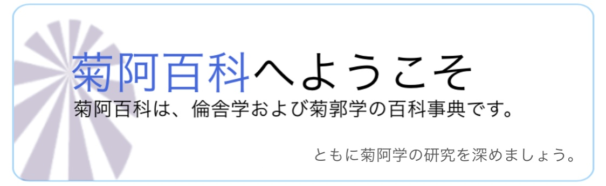

- 天皇解散（てんのうかいさん）は、郭期に起きた事件。十一事件のひとつ。
護藝庁は、発足から約2年菊子を保護してきたが、
その保護活動が上皇后に虐皇行為であると勘違いされた。それに伴い、上皇后は皇居で解議
を行い天皇体系の解散を促した。これにより護藝庁は菊子を退位させ、代わりに皇子に継承した。この一連の流れを天皇解散と呼称する...
- 菊鍵学（きっけんがく）は、キョロショップ下部の笑顔記号から入ることができるページを突破するための暗証鍵を解読する学問...
お知らせ
- 2021年1月13日 - 菊阿百科プロジェクトが作成されました。
- 2021年1月14日 - 一部の阿学者に公開されました。
関連サイト
倫舎学領域
- 倫子（3601字）
倫子（りんし）は、舎期の害子で四害のひとり。数々の阿事を起こす。舎3期に入東した入東徒であり、 舎5期に退東する。
- 籠厠事件（構築中・119字）
籠厠事件（ろうしょくじけん）は、舎期に起きた事件。十一事件のひとつ。
- 指定害悪（192字）
指定害悪（シテイガイアク、prescribed evils）は、菊阿学会が指定した四害を含む害悪の総称。
菊郭学領域
- 天皇解散（562字）
天皇解散（てんのうかいさん）は、郭期に起きた事件。十一事件のひとつ。
- 菊化（構築中・58字）
菊化（キッカ）は、菊子を践祚させ護皇すること。高場により考案された菊化政策で行われ、これを切掛に護皇運動が広まった。
- 謔華（2814字）
謔華（ギャッカ、humorublimation）は、怒りや恨みによって引き起こされる行動を謔的に昇華すること。
- 菊鍵学（1074字）
菊鍵学（きっけんがく）は、キョロショップ下部の笑顔記号から入ることができるページを突破するための暗証鍵を解読する学問。
- 謔学（構築中・772字）
謔学（ギャクガク）は、菊阿期における諧謔文化を研究する学問。
.
最終更新: 2021年3月19日
菊阿百科 アヴィリペディア
コンテンツは、特に記載されていない限り菊阿学会の著作です。